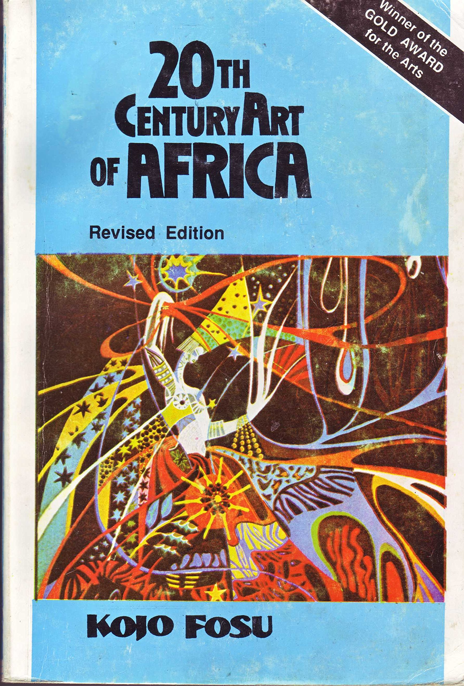

Bookshelf

20th Century Art of Africa
1986, revised 1993 - A seminal work on African art in the modern era.
Scan PDFPioneer of African Art Studies | Historian | Educator | Cultural Visionary
Prof. Kojo Fosu was a trailblazing Ghanaian art historian whose groundbreaking work redefined the global perception of African art. With decades of research, teaching, and cultural leadership, he bridged traditional and modern African aesthetics, leaving an indelible mark on the academic and artistic world.
Prof. Kojo Fosu’s tireless efforts elevated African art from marginalization to a celebrated field of study. His scholarship inspired generations of artists, historians, and educators, cementing his status as a cultural icon whose influence resonates in galleries, universities, and communities worldwide.
1986, revised 1993 - A seminal work on African art in the modern era.
Scan PDF